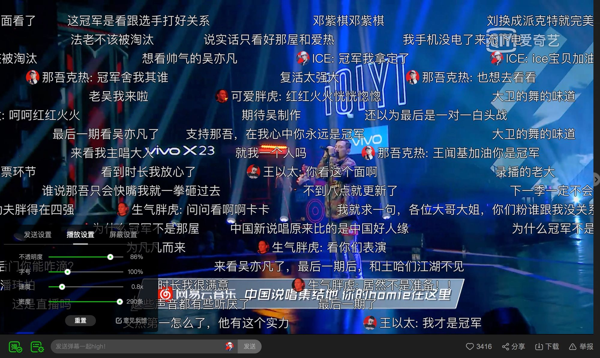

Bullet Chatting is called comment (コメント/comment) in Japanese. It refers to a comment or a comment floating over the
video in certain way at a specific point of time of the video, which can bring interesting and unexpected
experiences to the users while watching the video. Only when a large amount of comments shown up on the screen at the same time,
people call this state of the player a Danmaku. In China, in order to avoid conflict with the function of the original
comment, it was renamed as Bullet Chatting.
Bullet Chatting first got popular from the Japanese video-sharing website Niconico (ニコニコ). In China, besides the video-sharing websites that feature Bullet Chatting such as Bilibili and AcFun, for most of the other video websites, such as MiGu video,
Tencent video, iQiyi video, Youku video, etc., Bullet Chatting is also provided as a function of the player.
An example of bullet chatting
Bullet Chatting attributes
The Bullet Chatting has the following four attributes:
Mode: Rolling Bullet Chatting, reverse Bullet Chatting, top Bullet Chatting, bottom Bullet Chatting.
Basic properties: body, appearance time, duration, font, font size, color, etc.
Timeline: The on-demand barcorder is a real-time insertion or custom timeline for video playback time, live
broadcasts, and other scenes.
Container: A block-level element, typically the same size as the video.
Bullet Chatting characteristics
Bullet Chatting has three characteristics:
Independence of space: Although it is displayed in the same element, each type of Bullet Chatting mode is in
different layers in spatial calculation, and each mode can have multiple layers, and the Bullet Chatting
occupancy in each layer does not overlap.
Deterministic of rendering: If the Bullet Chatting area and the rendered list are fixed, then the position and
order of each Bullet Chatting is fixed each time it is rendered.
Uniformity of modes: The survival time of the Bullet Chatting of each mode remains the same.
Basic modes of the Bullet Chatting
There are four basic modes of the Bullet Chatting:
Rolling Bullet Chatting: Scrolls the screen from the right to the left at a constant speed, showing the
top-down priority.
Reverse Barr: Scrolls the screen from the left to the right at a constant speed, showing the top-down
priority.
Top Bullet Chatting: A Bullet Chatting that is statically centered from top to bottom, with top-down
priority.
Bottom Bullet Chatting: A Bullet Chatting that is centered from the bottom up and is displayed with a
bottom-up priority.
In addition, the Bullet Chatting has higher levels of customization and is out of scope for this document.
Commercial operation of Bullet Chatting
Bullet Chatting has a wide range of applications in China and Japan, and mainstream video sites and their apps
have good support and application for Bullet Chatting. The monthly activity of the relevant video websites can be
referred to as follows (only counting monthly active users for video-sharing websites/apps):
iQiyi: 575.1677 million monthly active users
Tencent Video: 467.491 million monthly active users
Youku: 444.829 million monthly active users
Mango TV: 100.267 million monthly active users
Bilibili animation: 80.652 million monthly active users
Sohu video: 36.35 million monthly active users
Niconico: 18.74 million monthly active users [source]
WebVTT — A file format for marking text tracks. [[webvtt1]]
TTML — A type of content that represents a time-series text medium that is exchanged between
authoring systems. [[ttml1]]
Background
Analysis from the perspective of user experience
During live streaming, two popular text chatting features are often provided to encourage user interaction: Chatroom and Bullet Chatting.
Chatroom: with the input of text, the content list will be scrolling from the bottom to the top at a constant speed.
Bullet Chatting: with the input of text, a single line of text will show up from the right side of the video, moving right-to-left in an independent path.
Advantage of displaying with Bullet Chatting
We can see from the below figure that when many people are chatting in the same room during live streaming, messages will be scrolling quickly, the display time of each message is highly affected by the chatroom's activity, the more active the users are, the less time each message will be displayed.
The display time of a single message in a chatroom
Bullet Chatting tries to provide a better way to display each message when many people are chatting online at the same time.
Density of the Information
Compared to the chatroom, Bullet Chatting has a wider display area, which provides better user experience reading a message even with the same font size.
a figure of the display time of a single message in Bullet Chatting
Update Frequency of the Information
In the Chatroom display mode, each message is scrolling up at the same speed as the others, so it's very difficult to do some special handling. While in the Bullet Chatting mode, each message is moving along their own path, and rarely affected by the update frequency of all the other messages, so it's possible and encouraged to ensure a proper display time for each message by algorithms.
Movement of Users' Sight
In the Chatroom display mode, it's difficult for a user to concentrate on both the video content and the text comments. While in the Bullet Chatting mode, video content is actually covered by the text comments, the user's sight doesn't need to move back and forth across the video and the text messages, so it can provide better immersive experience.
a figure of the movement of users' sight in the Chatroom display mode
a figure of the movement of users' sight in the Bullet Chatting display mode
Reading Habit
In a lot of languages, text is read from left to right and from top to bottom, so many people are used to read a single-line message horizontally. In the Bullet Chatting mode, text is mostly moving right-to-left, which allows people to read from left to right, so the user can get the meaning of such message very quickly.
a figure of the direction of reading in the Bullet Chatting display mode
While in the Chatroom display mode, even the user would like to read from left to right, the text messages are actually moving from bottom to top, which leads a mismatching bevel angle and increases the difficulty for the user to easily scan the comments.
a figure of the direction of reading in the chatroom display mode
Analysis of the Psychological Factors
From the perspective of social psychology, compared to watching a video alone, the feeling of participating in a group activity will make the user more cheerful. Bullet Chatting, by showing the text comments and the video content together in a comfortable way, can create a sense of participation in a group activity to the user. Without leaving his sight from the video content, the user is able to read others' comments on the on-going video clip or the up-coming clip, this helps to increase everyone's social presence.
Scenarios
This section mainly describes the specific use scenarios of Bullet Chatting.
On-demand video interaction
When watching a video site to provide a video, the viewer will have some ideas or voicing points in the process
of watching the video content, and want to publish it to share with more people. At this time, a Bullet Chatting
is needed to meet this demand. Through the Bullet Chatting, the viewer's comments at the same time can be
displayed in the video area by scrolling in a fixed direction, or statically displayed at the top or bottom of
the video area, which can increase the interactive characteristics of the viewer and the video and the viewer.
Interaction between the two. The Bullet Chatting sent at the same time basically has the same theme.
To be translated
In this scenario, the Bullet Chatting data is generally offline data (not real-time), and there is also a small
amount of real-time data.
Live streaming interaction
Bullet Chatting can also be a direct interaction between the anchor and the viewers in the live streaming
scene. Compared with the traditional real-time comments, the anchor can understand the
audience's needs and feedback more intuitively according to the display of the Bullet Chatting on the screen, adjust the next action and processing more conveniently, and can also interact according to the viewers' input.
To be translated
In this scenario, the Bullet Chatting data is generally real-time data.
Identify video highlights
Since the Bullet Chatting will only appear at a specific point in the video, if there is a large number of
Bullet Chatting at a certain point in time, it means that the time point has bright spots and high energy. The
audience is interested in this time point event and can also be used as video management and Recommended
reference data for other functions.
Video content enhancement
In the process of video on demand or live broadcast, there are some stages, the user is not concerned with the
picture content of the video itself, but the emotions and emotions stimulated by a certain point. At this time,
the viewer can enhance the video by superimposing on the video by the Bullet Chatting. The effect at this time
is to achieve a better experience. For example, the victory of the game, the climax of the plot to render the
atmosphere, or the cover of the horror of the horror to reduce fear.
Interaction within a webpage
Sometimes in order to increase the effect of a webpage, the product operator hopes to make the relevant content
into a visual impact of the Bullet Chatting effect, so that the relevant activities can be promoted in the webpage to increase the impact of the page, attracting The attention of young people increases the income.
In this kind of scene, the Bullet Chatting is displayed separately and is not attached to the video.
Interactive wall
On the wall means that the netizen can display the interactive experience of the offline event or conference by
sending the content of the Bullet Chatting to display the display screen prepared offline at the venue. The
upper wall can be understood as a purely Bullet Chatting application, which is equivalent to not displaying
video on the big screen, or even displaying content. It only shows the discussion content of the event site or
the netizen for the offline event, and enhances the offline event or the meeting atmosphere. Participants have a
stronger sense of participation.
In this kind of scene, the Bullet Chatting is also displayed separately, not attached to the video.
Masking
When watching a video, there may be a large number of bullet chatting appearing on the screen at the same time, which may unexpectedly cover the video itself, and disrupt users from watching the media content. For example, when the user is learning to dance, they may not see the movement of the dancer. [To be translated part: 这种情况下，就可以借助计算机视觉和AI的能力，对视频内容进行分析，并将之前已经定义好的“视频主体内容”进行识别，生成蒙版并分发给客户端后，客户端利用CSS3的特性进行渲染从而达成弹幕不会覆盖定义的“视频主体内容”的效果，这种弹幕被称为“蒙版弹幕”，也被称为“防挡弹幕”。]
[To be translated]
Non-text bullet chatting
Bullet chatting can contain non-text content such as emoji and images, to express the viewer's thoughts and opinions more vividly.

Bullet chatting containing images
Recommended API
Examples
Bullet Chatting uses new elements such as
bulletchatlist and bulletchat. These elements are not used as children of the media elements audio and video. From the Scenarios section, we can see that the usage of bullet chatting is not limited to those media elements like video. In scenes like Web page interaction or interactive wall, bullet chatting is independent to any media element.
This specification describes how the bullet chatting itself is rendered, not including the external bullet chatting list. 由于弹幕不依赖于video，因此不要求有弹幕列表。在常见的点播视频弹幕场景中，往往有一个类似[[webvtt1]]这样同步视频时间轴的弹幕列表，
这种情况需要由开发者根据视频时间添加bulletchat。
Attributes
bulletchatlist element
area: Defines the percentage of the total height of the bulletchatlist in the scroll bar and
the top Bullet Chatting display area, ranging from 0-100, 50 is half screen, 100 is full screen.
allowOverlap: Defines whether the Bullet Chatting beyond the display area allows
overlap. false if the display does not show the Bullet Chatting beyond the display
area; true if the Bullet Chatting will be displayed overlapping the display area.
To be translated
To be translated
bulletchat element
mode: Defines the type of Bullet Chatting, value is one of the folloing: scroll, top,bottom and reverse.
scroll The default value indicates the scroll Bullet Chatting. The Bullet Chatting scrolls
from left to right, and the scrolling time is controlled by the CSS
property bulletchat-duration. Display time rule: bulletchatthe leftmost element
into the bulletchatlist element area to the display bulletchat element from the
rightmost bulletchatlist element of the display region disappears time consumed.
top Indicates the top Bullet Chatting.
bottom Indicates the bottom Bullet Chatting.
reverse Represents a reverse scrolling Bullet Chatting. The Bullet Chatting will scroll from
right to left, and the scrolling time is scroll similar.
Events
bulletchat element
bulletchatstart: Triggered when the Bullet Chatting animation starts.
bulletchatend: Triggered when the Bullet Chatting animation ends.
bulletchatcancel: Trigger when the Bullet Chatting is terminated unexpectedly, such as the
Bullet Chatting is removed or hidden, or because the display area is not displayed.
Style
bulletchatlist element
bulletchat-play-state:running | paused, defines the state of the Bullet Chatting as running
or paused, and can be inherited.
bulletchat-duration:<time>, in seconds (s) or milliseconds (ms), defines the speed of
the Bullet Chatting, which can be inherited.
bulletchat element
bulletchat-play-state:running | paused, which defines the state of the Bullet Chatting as
running or paused, which can be inherited.
bulletchat-duration:<time>, in seconds (s) or milliseconds (ms), defines the speed of
the Bullet Chatting, which can be inherited.
bulletchat-delay:<time>, in seconds (s) or milliseconds (ms), defines when the Bullet
Chatting animation begins, defining a negative value allows a Bullet Chatting to start moving from the
middle.
Font size, color, border, line height, transparency, shadow, etc., same as existing CSS attributes.
A Gap Analysis of Bullet Chatting and WebVTT
[[webvtt1]] is a file format intended for marking up external text track resources, one of its typical usages is to provide captions or subtitles for video content. Bullet Chatting is also often intended for providing text descriptions of video content, so it was once considered as a subset of WebVTT, and a special format of subtitles.
However, in the section of Scenarios, we can see that the usage of Bullet Chatting is not limited to videos, for example, it's also widely used on webpage interaction and the interactive wall, running independently as a part of the webpage instead of a part of the video player.
If Bullet Chatting is designed as a subset of [[webvtt1]], then it has to follow all the rules of [[webvtt1]], and to cue the Bullet Chatting messages as a vtt file in the track element of a video element. However, in the live streaming interaction scenario, the Bullet Chatting messages come from comments submitted by users in real-time, it's impossible to prepare a vtt file which contains all the Bullet Chatting messages in advance. This real-time requirement also applies to the on-demand video interaction scenario.
Therefore, we would like to propose a new bulletchat element instead of making it a subset of WebVTT.